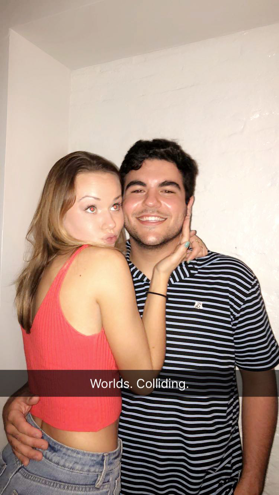
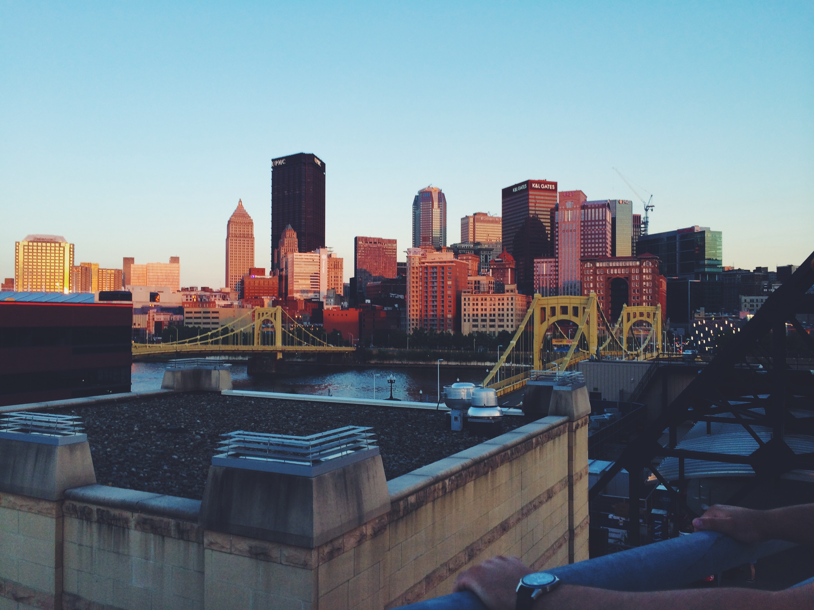

One of the biggest perks of my decision to go to Pitt has been the fact that my parents are so close to me. They live in Shadyside, which means that any time I have the urge to go home, I can hop on a bus (or call an uber when I'm feeling particularly lazy) and see them. An even bigger perk is that my sister decided to go to Pitt as well, and we've found that living a street away from each other has brought us closer than living only a wall away from each other at home ever had. My extended family is great as well; the best part about them is our collective sense of humor. When we're all together, we spend most of the time laughing and lovingly (usually) picking on each other. I also consider my friends to be part of my family - Allie, Ellie, Izzy, and Natalia have always served as a reminder to not take life too seriously.
fun stuff
I watch a lot of Netflix/Hulu/HBO, a habit I've been trying to kick for a while. My favorite show has to be "Curb Your Enthusiasm" with Larry David. I've watched the entire series probably four or five times, so it's probably a good thing there's a new season coming out this month. I also enjoy "Veep," "Bojack Horseman," and "Better Call Saul" (also new seasons for those last two!) My parents say I watch too much TV, but I attribute a lot of my sense of humor to what I view. Still, I'm making an concentrated effort to spend less time staring at my laptop mindlessly until 2 AM.
community
My friends, some of whom I've mentioned above, are my community. The people I've met at Pitt have been nothing less than essential to my growth into the person I am today. Something that I never imagined would happen, however, was that between junior and senior year, my big group of high school friends became just as close (if not closer than) as we were when we were 18. In the past few months, my college friends and high school friends have molded into one large group of positive, hilarious, and supportive people that I love to be around no matter the situation.


school and future (!)
I've always liked the humanities as school subjects MUCH more than I ever liked math or science. From first grade on, I wanted to be an English teacher, and I found myself excelling in those classes, mostly - I'm sure - because I actually enjoyed the content. By the time I applied to Pitt, I had talked myself out of this, so I came in undecided. I floated between a few things for a while, but nothing felt right. Sure enough, I found myself really loving the English classes I took, and finally ended up declaring English Writing as my major. (I did put the idea of teaching on the back burner, however.) Now that I've come to my last semester of undergrad, I'm finishing the PPW certificate. My internship right now with FortyX80, a division of the Pittsburgh Tech Council, is helping me to realize any dreams that I've had of actually being a "writer." I'm working with entrepreneurs and investors every day, seeing the intricacies of building a start-up, while keeping an eye on the writing that goes into each aspect of it. I'm not sure where this will take me, but it's opened my eyes to the possibilities of various future careers. I'm excited every time I think about my future, even though I still don't know exactly what I want to do. I'm pretty sure that if I can use my writing skills, I'll be happy.